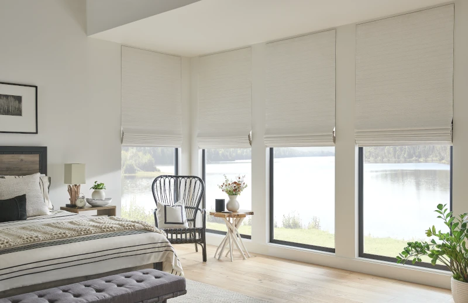

Interior Design Trends for 2025
Call Brent & Edna today at 405-259-5599
for your window treatment questions.
When you’re decorating a room in your home, you want your design choices to be on trend—but not so trendy that your décor is out-of-date in a couple years. To help you find a style that looks great now and has a good chance of agingwell over time, we’ll look at three different style trends for 2025 that look fresh today and should have plenty ofappeal for years to come.
Restorative Retreat
Combining the minimalism of Japanese and Scandinavian design with gentle curves and rounded shapes, the restorative retreat design trend offers a touch of serenity for busy lives.
Wellness is at the heart of the restorative retreat room. The softness of the designs and textures invites relaxation and sleep. Craftsmanship is celebrated, and ecofriendly materials are the rule. This is a friendly style—friendly to the senses and the environment.
Sit down in a restorative retreat room and you’ll feel comfort, both emotional and tactile. Earthtones dominate the walls and floor coverings, and the organic forms that dominate the room are soothing on the eyes. Everyone needs at least one restorative retreat room in their home.
Window Treatment Suggestion
Natural shades are an ideal choice for the restorative retreat room. Not only are natural shades made from sustainable natural materials, they also bring the beauty of wood grain and plant fibers into the home.
Classic Revival
Over the past decade, the mid-century modern style has intrigued interior designers. This popular style has branched out into numerous sub genres. The classic revival style trend refashions the aesthetics of mid-century into a broader style that has a character all its own.
The classic revival focuses on quality pieces situated in an environment of symmetry and balance. Antiques and ornamental pieces are set against a backdrop of crown molding and board and batten walls. Finishes include wood, stone, and brushed metals. Fabrics include chenille, boucle, tweed, faux fur and corduroy. Heirlooms and signature pieces are at home in a classic revival setting.
Window Treatment Suggestion
Drapery is an ideal addition to the classic revival room. Look for room darkening fabrics in solid neutral tones or traditional patterns.
Unexpected Optimism
This trend is all about joy. The unexpected optimism trend celebrates creativity and play. Graphic elements, from vintage to playful to cartoonish, adorn the walls. Joyous colors, including primaries, pastels, and neons can be found in places throughout the room. There is a disruptive quality to the design elements—including rounded furniture pieces and artwork with unique shapes.
Juxtaposition is another key trait of the unexpected optimism trend. Modern elements mix with nostalgic images or room fixtures. Pastels appear alongside saturated colors. Curved shapes meet straight lines. The whole effect is lighthearted and inviting—an alluring mix.
Window Treatment Suggestion

A layered shade with its bold bands of color contrasts nicely with curved design elements. A roller shade in a pastel provides an unexpected contrast to primary colors in the room.
These style trends are just guidelines. But following one of these styles can help you create a room with a cohesive look—and that means greater visual appeal and a sense of harmony every time you walk into the room.
Contact us today today to start creating a room that’s in style for many years to come.